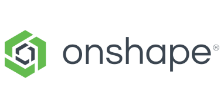
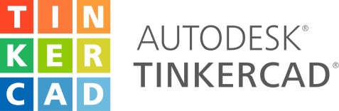
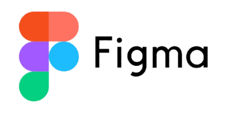
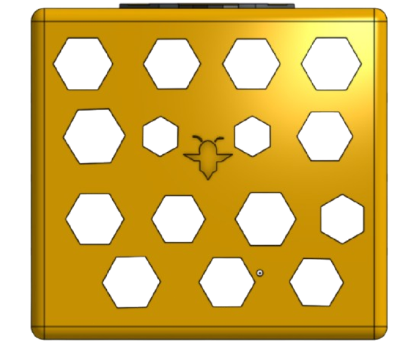
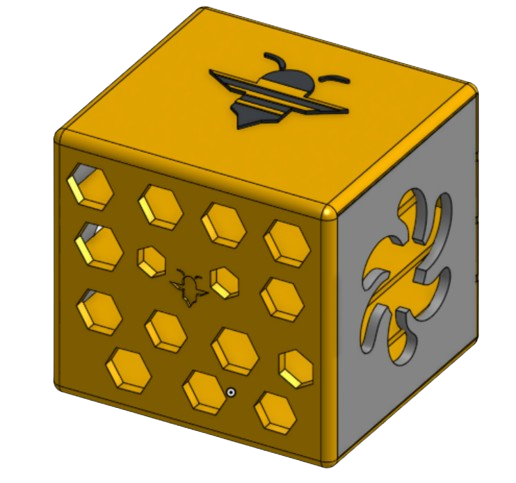
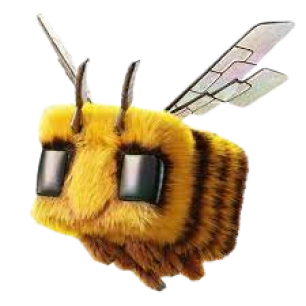

Pensé pour vous plaire
BeeNext
BeeNext.
Nouvelle génération de boitiers optimisés pour l’intelligence artificielle
Avantages/Atouts
❓Pourquoi nous?


🔎 Présentation du projet
Fajr
Ingénieur et monteur

Dan
Ingénieur
Guilhem
Développeur et designer
Tristan
Chef de projet, développeur, designer
Notre équipe est composée de 4 élèves de Première STI2D1. Ensemble, ils regroupent les compétences nécessaires pour le bien du projet : montage vidéo, ingénierie, développement, câblage, gestion de projet, design...
🧑💻 L’équipe
🛠️ Technologies
OnShape: logiciel de modélisation 3D en ligne
Tinkercad: logiciel de création et simulation de circuits
CloudFlare: plateforme d’hébergement (VPS, Workers, etc.) spécialisée dans la protection anti-ddos.
Figma: logiciel de maquette/design UI (interface utilisateur) et UX (expérience utilisateur)
Visual Studio / Visual Studio Code: IDE collaboratif



Tinkercad: logiciel de création et simulation de circuits
CloudFlare: plateforme d’hébergement (VPS, Workers, etc.) spécialisée dans la protection anti-ddos.
Figma: logiciel de maquette/design UI (interface utilisateur) et UX (expérience utilisateur)
Visual Studio / Visual Studio Code: IDE collaboratif
💲 Marché/Cibles


